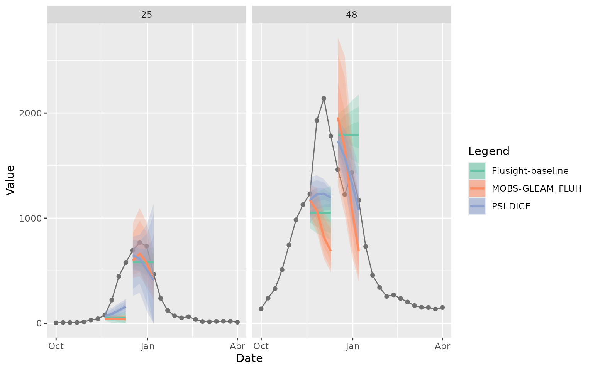
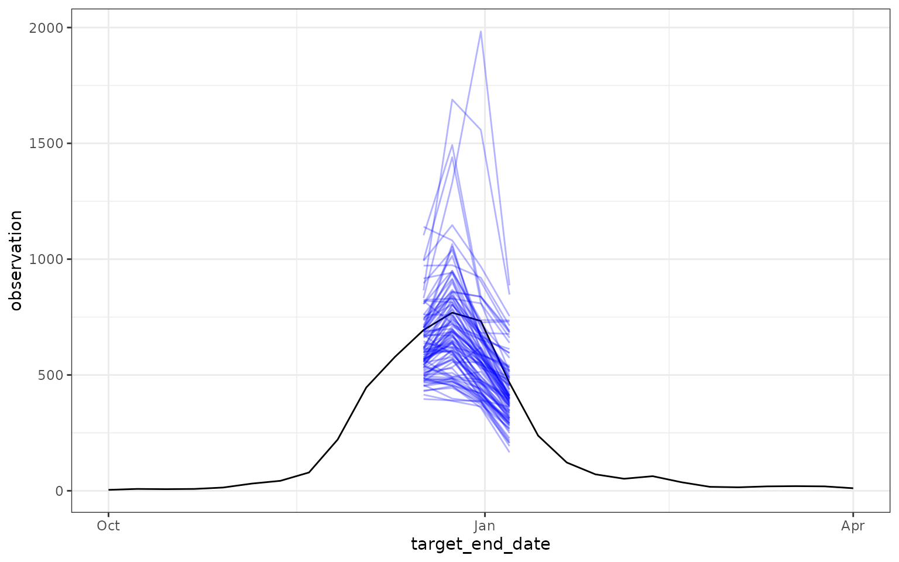
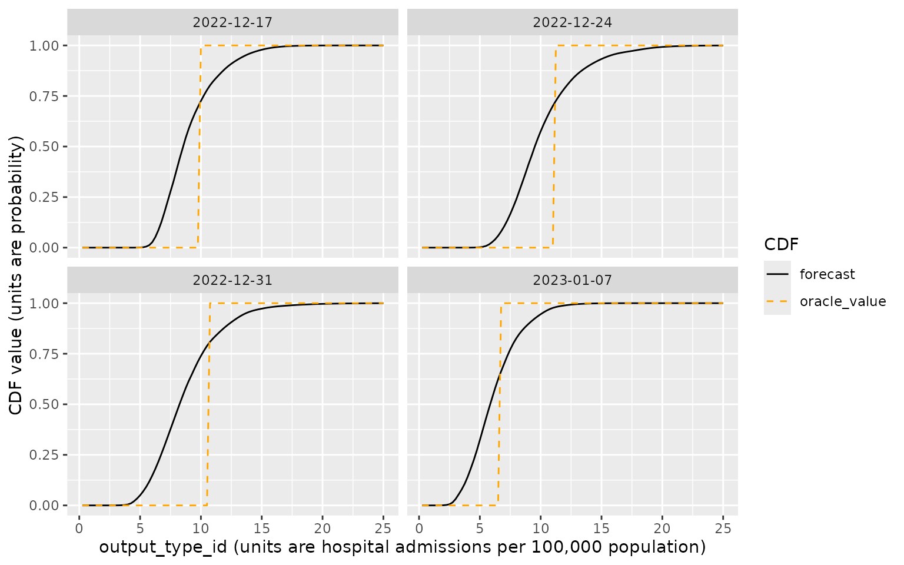
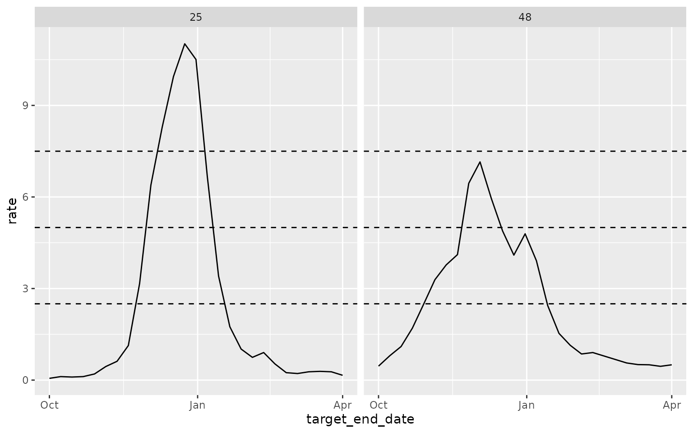
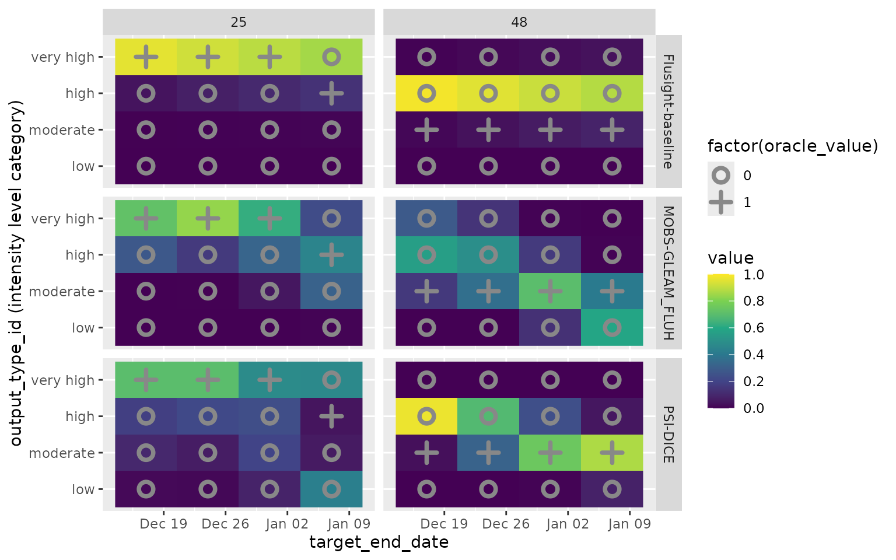

library(hubExamples)
library(hubVis)
library(dplyr)
#>
#> Attaching package: 'dplyr'
#> The following objects are masked from 'package:stats':
#>
#> filter, lag
#> The following objects are masked from 'package:base':
#>
#> intersect, setdiff, setequal, union
library(ggplot2)Overview
The hubExamples package provides three data sets that
contain example model output and target data for an example forecast
hub: forecast_outputs, forecast_target_ts, and
forecast_oracle_output. These forecasts and target data are
a subset of the model outputs and target data that are provided in the
example-complex-forecast-hub.
These data were in turn derived from forecast submissions and target
data for the FluSight
Forecast Hub for the 2022/23 season.
We begin with a high level overview of these data objects and then we describe the different forecast targets in more detail.
Example forecast output data
The example forecasts provided in forecast_outputs are
derived from forecasts that were submitted to the FluSight hub from
three models: Flusight-baseline,
MOBS-GLEAM_FLUH, and PSI-DICE. The original
forecasts submitted to the hub were in quantile format, but we have
modified those submissions to provide examples of additional model
output types and targets. The predictions for these other output types
should be viewed only as illustrations of the data formats, not as real
examples of forecasts. We will describe the methods used for creating
other forecast output types below.
The snippet below shows the format of the
forecast_outputs (note: here and throughout the document,
you may need to scroll to the right within displays of code output to
see all data frame columns).
head(forecast_outputs)
#> # A tibble: 6 × 9
#> model_id reference_date target horizon location target_end_date output_type output_type_id value
#> <chr> <date> <chr> <int> <chr> <date> <chr> <chr> <dbl>
#> 1 Flusight-baseline 2022-11-19 wk inc flu hosp 0 25 2022-11-19 quantile 0.05 22
#> 2 Flusight-baseline 2022-11-19 wk inc flu hosp 0 25 2022-11-19 quantile 0.1 31
#> 3 Flusight-baseline 2022-11-19 wk inc flu hosp 0 25 2022-11-19 quantile 0.25 45
#> 4 Flusight-baseline 2022-11-19 wk inc flu hosp 0 25 2022-11-19 quantile 0.5 51
#> 5 Flusight-baseline 2022-11-19 wk inc flu hosp 0 25 2022-11-19 quantile 0.75 57
#> 6 Flusight-baseline 2022-11-19 wk inc flu hosp 0 25 2022-11-19 quantile 0.9 71This is a data frame with four groups of columns (see the hubverse documentation for more information about these data formats):
- The
model_ididentifies the model that produced the predictions. - Together, the
location,reference_date,horizon,target_end_date, andtargetcolumns are referred to as “task id variables” because they serve to identify a prediction task:- The
locationcolumn contains a FIPS code identifying the location being predicted. - The
reference_dateis a date in ISO format that gives the Saturday ending the week the predictions were generated. - The
horizongives the difference between thereference_dateand the target date of the forecasts (target_end_date, see next item) in units of weeks. Informally, this describes “how far ahead” the predictions are targeting. - The
target_end_dateis a date in ISO format that gives the Saturday ending the week being predicted. For example, if thetarget_end_dateis"2022-12-17", predictions are for a quantity relating to influenza activity in the week from Sunday, December 11, 2022 through Saturday, December 17, 2022. - The
targetdescribes the target quantity for the prediction. In the above example, thetargetof"wk flu hosp rate"is the weekly rate of hospital admissions per 100,000 population. The targets included in this example will be described in other sections below.
- The
- The
output_typeandoutput_type_idcolumns provide metadata about the model predictions.- The
output_typespecifies the representation of the predictive distribution. - The
output_type_idgives additional identifying information about the predictions; the information in this column is specific to theoutput_type.
- The
- The
valuecolumn contains the value of the model’s prediction.
The original hub submissions contained predictions for many locations
and dates, and quantile forecasts were provided at 23 different quantile
levels ranging from 0.01 to 0.99. To make the example data more
manageable, the forecast_outputs object contains a subset
of these outputs for two locations (Massachusetts, FIPS code
"25", and Texas, FIPS code "48") and two
reference dates (2022-11-19 and 2022-12-17). Additionally, for the
quantile forecasts we have subset to seven quantile levels: 0.05, 0.1,
0.25, 0.5, 0.75, 0.9, and 0.95.
The task id variables used and values of those variables are specific to each modeling hub. For example, a hub collecting predictions for locations other than US states would use a different location identifier than FIPS codes, and a hub might introduce additional task id variables such as an identifier of age group or disease variant depending on the goals of the hub. See the hubverse documentation for further information about task id variables.
Example forecast target data
All predictions are for targets that are based on influenza hospital
admissions as reported in the US National Healthcare Safety Network
(NHSN). The forecast_target_ts object contains the observed
values of these hospital admissions in a time series format:
head(forecast_target_ts)
#> # A tibble: 6 × 3
#> date location observation
#> <date> <chr> <dbl>
#> 1 2020-01-11 01 0
#> 2 2020-01-11 15 0
#> 3 2020-01-11 18 0
#> 4 2020-01-11 27 0
#> 5 2020-01-11 30 0
#> 6 2020-01-11 37 0
tail(forecast_target_ts)
#> # A tibble: 6 × 3
#> date location observation
#> <date> <chr> <dbl>
#> 1 2023-11-11 51 88
#> 2 2023-11-11 50 3
#> 3 2023-11-11 53 20
#> 4 2023-11-11 55 19
#> 5 2023-11-11 54 12
#> 6 2023-11-11 56 7The forecast_oracle_output object contains the observed
values for the prediction targets:
head(forecast_oracle_output)
#> # A tibble: 6 × 6
#> location target_end_date target output_type output_type_id oracle_value
#> <chr> <date> <chr> <chr> <chr> <dbl>
#> 1 US 2022-10-22 wk inc flu hosp quantile NA 2380
#> 2 01 2022-10-22 wk inc flu hosp quantile NA 141
#> 3 02 2022-10-22 wk inc flu hosp quantile NA 3
#> 4 04 2022-10-22 wk inc flu hosp quantile NA 22
#> 5 05 2022-10-22 wk inc flu hosp quantile NA 50
#> 6 06 2022-10-22 wk inc flu hosp quantile NA 124This data frame has a subset of the columns in the
forecast_outputs that is sufficient to identify the
observed value corresponding to each prediction, including the
location, target_end_date,
target, output_type, and
output_type_id, along with the observed target values,
recorded in the oracle_value column. Note that the
reference_date and horizon columns are not
needed in this data frame, since the target_end_date is
sufficient to align observations with predictions.
Further detail on the forecast targets
The example forecast data contains the following combinations of
target and output_type:
forecast_outputs |>
distinct(target, output_type) |>
arrange(target, output_type)
#> # A tibble: 6 × 2
#> target output_type
#> <chr> <chr>
#> 1 wk flu hosp rate cdf
#> 2 wk flu hosp rate category pmf
#> 3 wk inc flu hosp mean
#> 4 wk inc flu hosp median
#> 5 wk inc flu hosp quantile
#> 6 wk inc flu hosp sampleWe will describe each of these targets in the following sections.
The wk inc flu hosp target
The wk inc flu hosp target represents weekly new
hospital admissions with a confirmed influenza diagnosis. We have
predictions of this target with four output types: mean,
median, quantile and sample. Note
that the quantile predictions were contributed directly by modelers to
the FluSight hub, and median predictions correspond exactly to the
quantile predictions at probability level 0.5. We have obtained sample
predictions from the quantile forecasts using the distfromq package by
estimating the full quantile function from the submitted quantile
predictions for each individual location and target date, drawing
samples from those marginal distributions using the probability integral
transform method, and using a copula corresponding to a discrete-time
AR(0.9) Gaussian process to induce dependence across sequential
horizons. Mean predictions are obtained as the mean of samples drawn for
each location and target date combination.
The following plot shows the quantile and median predictions along with the observed hospital admission counts for Massachusetts and Texas.
plot_step_ahead_model_output(
model_out_tbl = forecast_outputs |>
filter(output_type %in% c("quantile", "median")),
target_data = forecast_target_ts |>
filter(location %in% c("25", "48"),
date >= "2022-10-01", date <= "2023-04-01"),
use_median_as_point = TRUE,
x_col_name = "target_end_date",
intervals = c(0.5, 0.8, 0.9),
facet = "location",
group = "reference_date",
interactive = FALSE
)
#> Warning: ! `output_type_id` column must be a numeric. Converting to numeric.
The following plot shows the target data and predictive samples for just predictions for Massachusetts with reference date December 17, 2022 generated by the “MOBS-GLEAM_FLUH” model.
ggplot() +
geom_line(
data = forecast_target_ts |>
filter(location == "25",
date >= "2022-10-01", date <= "2023-04-01"),
mapping = aes(x = date, y = observation)
) +
geom_line(
data = forecast_outputs |>
filter(
location == "25",
model_id == "MOBS-GLEAM_FLUH",
reference_date == "2022-12-17",
output_type == "sample"
),
mapping = aes(x = target_end_date, y = value, group = output_type_id),
color = "blue",
alpha = 0.3
) +
theme_bw()
For purposes of evaluating predictions, it can be helpful to join the
observed target values, contained in
forecast_oracle_output, into the data frame of forecast
outputs. This enables direct comparison of predictions and observations.
We illustrate this here, omitting some columns from the display for
convenience:
forecast_outputs |>
filter(target == "wk inc flu hosp") |>
left_join(forecast_oracle_output) |>
select(-model_id, -reference_date, -horizon)
#> Joining with `by = join_by(target, location, target_end_date, output_type, output_type_id)`
#> # A tibble: 5,232 × 7
#> target location target_end_date output_type output_type_id value oracle_value
#> <chr> <chr> <date> <chr> <chr> <dbl> <dbl>
#> 1 wk inc flu hosp 25 2022-11-19 quantile 0.05 22 NA
#> 2 wk inc flu hosp 25 2022-11-19 quantile 0.1 31 NA
#> 3 wk inc flu hosp 25 2022-11-19 quantile 0.25 45 NA
#> 4 wk inc flu hosp 25 2022-11-19 quantile 0.5 51 NA
#> 5 wk inc flu hosp 25 2022-11-19 quantile 0.75 57 NA
#> 6 wk inc flu hosp 25 2022-11-19 quantile 0.9 71 NA
#> 7 wk inc flu hosp 25 2022-11-19 quantile 0.95 80 NA
#> 8 wk inc flu hosp 25 2022-11-26 quantile 0.05 5 NA
#> 9 wk inc flu hosp 25 2022-11-26 quantile 0.1 21 NA
#> 10 wk inc flu hosp 25 2022-11-26 quantile 0.25 38 NA
#> # ℹ 5,222 more rowsThe wk flu hosp rate target
The wk flu hosp rate target represents the rate of
weekly confirmed influenza hospital admissions per 100,000 population.
Note that this target was not included in the FluSight hub; we have
introduced it here for illustrative purposes. We have used population
values of 6,978,662 for Massachusetts and 29,914,599 for Texas. These
population values are sourced from the auxiliary
data file provided by the FluSight hub, which are also reproduced in
the example-complex-forecast-hub
repository.
For this target, we created cumulative distribution function (CDF) predictions with evenly spaced CDF evaluation points ranging from 0.25 to 25 in increments of 0.25 hospitalizations per 100,000 population:
forecast_outputs |>
filter(target == "wk flu hosp rate") |>
select(-model_id, -reference_date, -horizon) |>
head()
#> # A tibble: 6 × 6
#> target location target_end_date output_type output_type_id value
#> <chr> <chr> <date> <chr> <chr> <dbl>
#> 1 wk flu hosp rate 25 2022-11-19 cdf 0.25 0.0409
#> 2 wk flu hosp rate 25 2022-11-19 cdf 0.5 0.131
#> 3 wk flu hosp rate 25 2022-11-19 cdf 0.75 0.568
#> 4 wk flu hosp rate 25 2022-11-19 cdf 1 0.891
#> 5 wk flu hosp rate 25 2022-11-19 cdf 1.25 0.965
#> 6 wk flu hosp rate 25 2022-11-19 cdf 1.5 0.985For the CDF output_type, the output_type_id
contains the value at which the predictive CDF was evaluated, and the
value contains the predicted probability that the target is
less than or equal to that evaluation point. In the above example, the
value in the row with output_type_id equal to
1.5 contains the model’s estimated probability that the rate of hospital
admissions in Texas the week of December 17, 2022 would be less than or
equal to 1.5 admissions per 100,000 population. Again, these CDF values
were estimated from the original quantile forecasts using the methods in
the distfromq package.
The following plot illustrates the predictive CDFs produced by the
MOBS-GLEAM_FLUH model for Massachusetts on the reference
date 2022-12-17, with each target_end_date shown in a
separate facet. Also shown in orange is a CDF representing the
observation for this target, which was between 9.75 and 10
hospitalizations per 100,000 population. This CDF corresponds to a point
mass at the observed value, with a value of 0 below the observation and
a value of 1 above the observation.
# Subset the forecasts and oracle values to those that we will plot
forecasts_to_plot <- forecast_outputs |>
filter(
model_id == "MOBS-GLEAM_FLUH",
target == "wk flu hosp rate",
location == "25",
reference_date == "2022-12-17"
) |>
mutate(output_type_id = as.numeric(output_type_id))
head(forecasts_to_plot)
#> # A tibble: 6 × 9
#> model_id reference_date target horizon location target_end_date output_type output_type_id value
#> <chr> <date> <chr> <int> <chr> <date> <chr> <dbl> <dbl>
#> 1 MOBS-GLEAM_FLUH 2022-12-17 wk flu hosp rate 0 25 2022-12-17 cdf 0.25 8.52e-21
#> 2 MOBS-GLEAM_FLUH 2022-12-17 wk flu hosp rate 0 25 2022-12-17 cdf 0.5 1.63e-19
#> 3 MOBS-GLEAM_FLUH 2022-12-17 wk flu hosp rate 0 25 2022-12-17 cdf 0.75 2.80e-18
#> 4 MOBS-GLEAM_FLUH 2022-12-17 wk flu hosp rate 0 25 2022-12-17 cdf 1 4.37e-17
#> 5 MOBS-GLEAM_FLUH 2022-12-17 wk flu hosp rate 0 25 2022-12-17 cdf 1.25 6.17e-16
#> 6 MOBS-GLEAM_FLUH 2022-12-17 wk flu hosp rate 0 25 2022-12-17 cdf 1.5 7.87e-15
oracle_outputs_to_plot <- forecast_oracle_output |>
filter(
target == "wk flu hosp rate",
location == "25",
target_end_date %in% forecasts_to_plot$target_end_date
) |>
mutate(output_type_id = as.numeric(output_type_id))
head(oracle_outputs_to_plot)
#> # A tibble: 6 × 6
#> location target_end_date target output_type output_type_id oracle_value
#> <chr> <date> <chr> <chr> <dbl> <dbl>
#> 1 25 2022-12-17 wk flu hosp rate cdf 0.25 0
#> 2 25 2022-12-17 wk flu hosp rate cdf 0.5 0
#> 3 25 2022-12-17 wk flu hosp rate cdf 0.75 0
#> 4 25 2022-12-17 wk flu hosp rate cdf 1 0
#> 5 25 2022-12-17 wk flu hosp rate cdf 1.25 0
#> 6 25 2022-12-17 wk flu hosp rate cdf 1.5 0
# We illustrate that the cdf values recorded in forecast_oracle_output
# correspond to a point mass at the observed hospitalization rate.
first_one_ind <- min(which(oracle_outputs_to_plot$oracle_value == 1))
oracle_outputs_to_plot[(first_one_ind - 2):(first_one_ind + 2), ]
#> # A tibble: 5 × 6
#> location target_end_date target output_type output_type_id oracle_value
#> <chr> <date> <chr> <chr> <dbl> <dbl>
#> 1 25 2022-12-17 wk flu hosp rate cdf 9.5 0
#> 2 25 2022-12-17 wk flu hosp rate cdf 9.75 0
#> 3 25 2022-12-17 wk flu hosp rate cdf 10 1
#> 4 25 2022-12-17 wk flu hosp rate cdf 10.2 1
#> 5 25 2022-12-17 wk flu hosp rate cdf 10.5 1
# Make the plot
ggplot() +
geom_line(
mapping = aes(x = output_type_id, y = value,
color = "forecast", linetype = "forecast"),
data = forecasts_to_plot
) +
geom_line(
mapping = aes(x = output_type_id, y = oracle_value,
color = "oracle_value", linetype = "oracle_value"),
data = oracle_outputs_to_plot,
) +
scale_color_manual(
"CDF",
values = c("black", "orange")
) +
scale_linetype_manual(
"CDF",
values = c(1, 2)
) +
facet_wrap(vars(target_end_date)) +
xlab("output_type_id (units are hospital admissions per 100,000 population)") +
ylab("CDF value (units are probability)")
The wk flu hosp rate category target
The “wk flu hosp rate category” target represents a categorical
intensity level of influenza activity, defined as “low” (hospital
admissions rate per 100,000
2.5), “moderate” (2.5 < admissions rate
5), “high” (5 < admissions rate
7.5), or “very high” (7.5 < admissions rate). The
forecast_outputs object has example forecasts for this
target in a PMF format, with a probability assigned to each intensity
category. Again, forecasts of this target were not collected by the
FluSight hub; we have derived predictions from the submitted quantile
forecasts using the distfromq package. For context, the
following plot displays the observed data for the 2022/23 season on the
scale of hospital admissions per 100,000 population, with the boundaries
of the intensity categories denoted with horizontal lines:
# a data frame containing location FIPS codes and population values
# in units of 100,000 people
population_values <- data.frame(
location = c("25", "48"),
population_100k = c(6978662, 29914599) / 100000
)
# compute observed hospital admission rates for the 2022/23 season
observed_rates <- forecast_target_ts |>
filter(location %in% c("25", "48"),
date >= "2022-10-01", date <= "2023-04-01") |>
left_join(population_values) |>
mutate(rate = observation / population_100k)
#> Joining with `by = join_by(location)`
# plot along with intensity thresholds
ggplot() +
geom_line(
mapping = aes(x = date, y = rate),
data = observed_rates
) +
geom_hline(
mapping = aes(yintercept = y),
linetype = 2,
data = data.frame(y = c(2.5, 5, 7.5))
) +
facet_wrap(vars(location))
Here is a plot showing the predictive distributions for these targets
from the three included models. Color indicates the predicted
probability for each intensity category. The observed category is
indicated with a + in the plot, while unobserved categories
are indicated with an o. Here, the PMF value recorded in
forecast_oracle_output corresponds to a point mass at the
observed category, with a value of 1 for the observed category and a
value of 0 for the other categories.
# extract a subset of forecasts to plot and
# set the output_type_id to be an ordered factor
forecasts_to_plot <- forecast_outputs |>
filter(
target == "wk flu hosp rate category",
reference_date == "2022-12-17"
) |>
mutate(
output_type_id = factor(output_type_id,
levels = c("low", "moderate", "high", "very high"),
ordered = TRUE)
)
forecasts_to_plot |>
select(-model_id, -reference_date, -horizon) |>
head()
#> # A tibble: 6 × 6
#> target location target_end_date output_type output_type_id value
#> <chr> <chr> <date> <chr> <ord> <dbl>
#> 1 wk flu hosp rate category 25 2022-12-17 pmf low 0.0000180
#> 2 wk flu hosp rate category 25 2022-12-17 pmf moderate 0.00157
#> 3 wk flu hosp rate category 25 2022-12-17 pmf high 0.0397
#> 4 wk flu hosp rate category 25 2022-12-17 pmf very high 0.959
#> 5 wk flu hosp rate category 25 2022-12-24 pmf low 0.00000970
#> 6 wk flu hosp rate category 25 2022-12-24 pmf moderate 0.00294
# extract the corresponding oracle values
oracle_outputs_to_plot <- forecast_oracle_output |>
filter(
location %in% c("25", "48"),
target == "wk flu hosp rate category",
target_end_date %in% forecasts_to_plot$target_end_date
) |>
mutate(
output_type_id = factor(output_type_id,
levels = c("low", "moderate", "high", "very high"),
ordered = TRUE)
)
oracle_outputs_to_plot |>
head()
#> # A tibble: 6 × 6
#> location target_end_date target output_type output_type_id oracle_value
#> <chr> <date> <chr> <chr> <ord> <dbl>
#> 1 25 2022-12-17 wk flu hosp rate category pmf low 0
#> 2 25 2022-12-17 wk flu hosp rate category pmf moderate 0
#> 3 25 2022-12-17 wk flu hosp rate category pmf high 0
#> 4 25 2022-12-17 wk flu hosp rate category pmf very high 1
#> 5 48 2022-12-17 wk flu hosp rate category pmf low 0
#> 6 48 2022-12-17 wk flu hosp rate category pmf moderate 1
# plot the predictions and oracle values
ggplot() +
geom_raster(
mapping = aes(x = target_end_date, y = output_type_id, fill = value),
data = forecasts_to_plot
) +
scale_fill_viridis_c(
breaks = seq(from = 0, to = 1, by = 0.2),
limits = c(0, 1)
) +
geom_point(
mapping = aes(x = target_end_date, y = output_type_id,
shape = factor(oracle_value)),
color = "#888888",
size = 3, stroke = 2,
data = oracle_outputs_to_plot,
) +
scale_shape_manual(
values = c(1, 3),
breaks = c(0, 1)
) +
facet_grid(rows = vars(model_id), cols = vars(location)) +
ylab("output_type_id (intensity level category)")